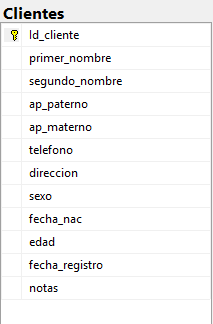

Diagrama de la tabla en la base de datos
Registrar y administrar los datos de clientes, mediante un sistema centralizado, para identificar, contactar y dar seguimiento personalizado a los servicios realizados dentro del negocio de reparación.
CREATE TABLE Clientes (
Id_cliente INT IDENTITY(1,1) PRIMARY KEY, -- Clave primaria autoincremental
primer_nombre VARCHAR(50) NOT NULL,
segundo_nombre VARCHAR(50) NULL,
ap_paterno VARCHAR(50) NOT NULL,
ap_materno VARCHAR(50) NULL,
telefono VARCHAR(20) NULL,
direccion VARCHAR(200) NULL,
sexo VARCHAR(20) NULL,
fecha_nac DATE NOT NULL,
edad AS DATEDIFF(YEAR, fecha_nac, GETDATE()), -- Campo calculado de edad
fecha_registro DATETIME DEFAULT GETDATE(),
notas TEXT NULL,
CONSTRAINT CHK_sexo CHECK (sexo IN ('hombre','mujer','prefiero no decirlo'))
);
INSERT INTO Clientes (
primer_nombre, segundo_nombre, ap_paterno, ap_materno, telefono, direccion, sexo, fecha_nac, notas
)
VALUES
('Ana','María','Ramírez','López','555-000-1111','Calle 1 #123','mujer','1990-05-12','Cliente frecuente'),
('Luis',NULL,'Mora','González','555-000-2222','Calle 2 #456','hombre','1985-11-23','Prefiere contacto por email');